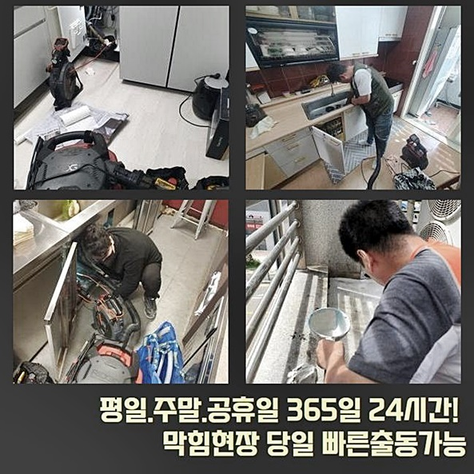
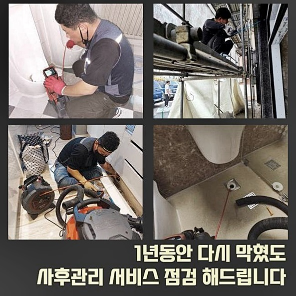
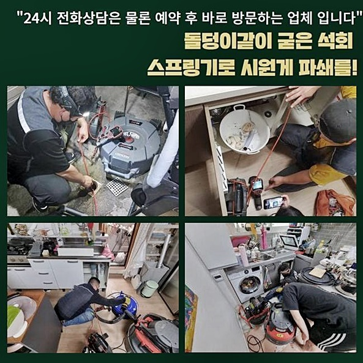
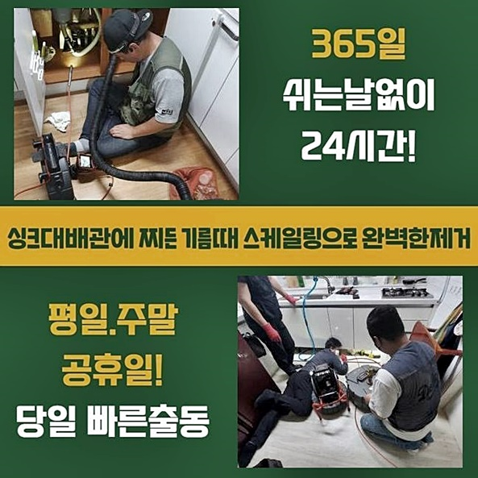
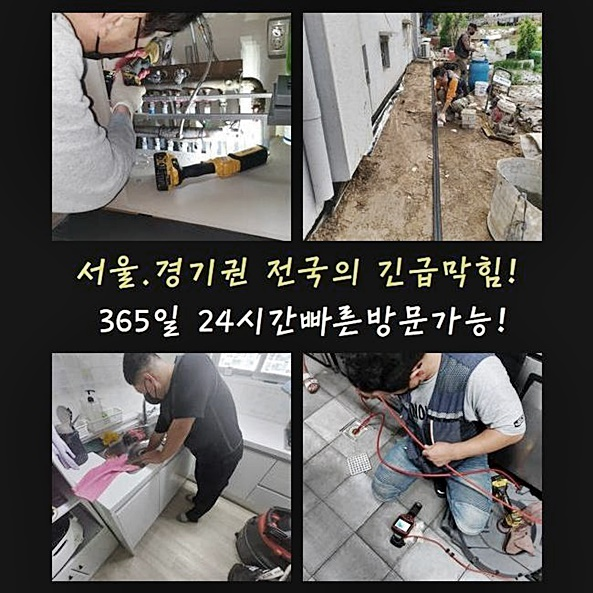
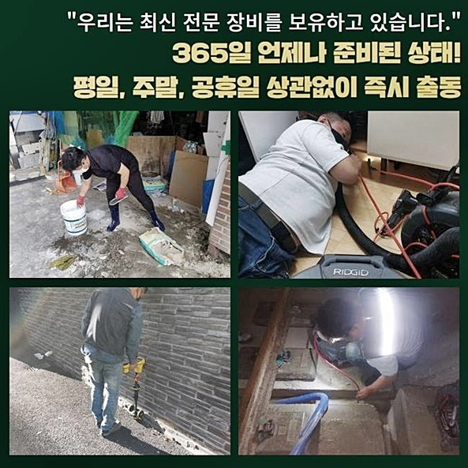
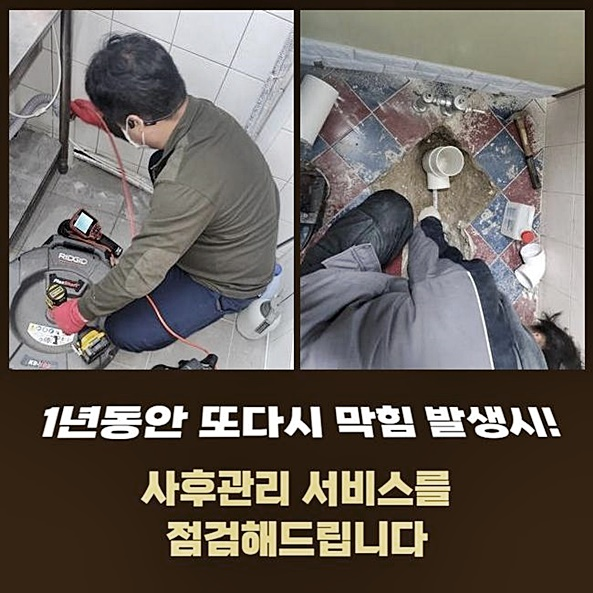

🏠 용인 유림동오수관막힘 포곡읍 악취차단 출장수리
용인시 처인구 배관막힘 전문 시공 후기

📋 작업 개요
- 위치: 용인시 처인구, 수원시 영통구, 화성시 동탄
- 서비스 유형: 배관막힘, 배관수리, 고압세척, 내시경점검
- 작업 일시:
- 업체명: 하수구수사대 (010-5615-2118)
🔍 문제 상황
용인 유림동오수관막힘 포곡읍 악취차단 출장수리
배수파이프 막힘을 관리하는 전문팀으로 정비를 오랫동안 하다보면 세대 내부와 더불어 실외의 장애들도 처리해야 할 상황이 많습니다
외부의 하수파이프는 폭우가 많이 내릴 때와 같이 기상 변화로 인하여 부유물들이 유입되면서 생각지도 못하게 막혀버리는 일이 생기기도 합니다
이러한 경우 예상되는 징후들이 보이지 않아 모두가 생각하지 못한 상황에 봉착하게 돼 빠른 처리가 어려울 수 있습니다
금일 소개해드리는 하수파이프 시공 작업을 통해 어떤 방식으로 대처할 수 있는지 상세히 알려드리겠습니다
저희팀은 하수배관 막힘을 전문적으로 수년간 해왔기 때문에 여러 유형의 막힘 문제들을 거뜬히 처리해드립니다
의뢰인의 요청에 따라 찾아간 곳은 물을 쓸 때마다 실외에 있는 하수배관에서 물이 흘러넘치는 상황이었어요
문제장소에 도착해보니 물이 흘러넘치는 정황을 확실하게 볼 수 있었습니다
일단 문제 위치를 조금 파보니 땅속에 배수파이프가 살짝 드러나보였습니다
바로 명확한 문제가 확인되지 않았어도 하수관의 특정부위가 파열됐거나 이물질들이 유입되는 틈들이 발생했다고 예측할 수 있었어요
여러종류의 하수관 작업을 수행했고 이 현장과 유사한 케이스도 처리했던 경력이 충분해서 대강의 상태를 짐작할 수 있었어요
급하다는 이유로 주거지 근처의 확인되지 않은 하수관로 시공팀이나 공구상 등에 전화를 하면 이유를 알아내지 못하고 금액만 소모하게 되니 신경써 주세요
일단 많은 물을 흘러가게 하는 물 흐름 검사를 진행하였는데요

🔎 원인 분석
💡 전문가 진단: 정밀 진단 장비를 사용하여 슬러지의 고착 여부를 판명하고 타격/세척 작업을 실시했습니다.
많은 양의 물이 동일하게 새어나오는 것을 시각적으로 확인했습니다
지면을 약간 더 파보았더니 대형 배수관이 파손된 것을 확인하게 되었습니다
배수관 지름이 큰편인데다 대량의 토사가 내부에 있어서 수리가 간단하지 않겠다고 인식하게 된 순간이었습니다
저희 하수배관 막힘 팀은 가장 처음으로 배관 탐지를 통해 내부 상태를 정밀하게 체크해 보았어요
배관 탐지를 위해 배수관이 지나가는 지점들을 확인하고 더 깊이 굴착작업을 실시했어요
다른 지점에 피해를 주지 않도록 점진적으로 신중히 작업하였는데요
관로를 탐지하면서 추가로 부서진 지점이 있는지 확인해 보았습니다
이어져있는 배수관으로 하수배관 내시경 도구를 투입해서 추가로 금이 간 지점이 있는지 점검하였는데요
배수파이프 내부에 나뭇가지들과 기름찌꺼기가 가득 들어있는 모습을 목격했습니다
아무래도 손상된 배수관을 통해 식물 가지들과 이물질들이 유입된 듯 확인되었습니다
예상보다 다량의 식물줄기들을 보고 약간 당황하긴 했지만 분명하게 치워주지 않게 되면 다음번에도 장애의 원인이 되기 때문에 하수파이프 작업이 가능한 저희팀이 처리해야 할 경우였어요
샤프트 장치의 앞부분을 이용해 분쇄하는 방식을 수행하기로 판단했는데요
잔가지들의 크기가 크기 때문에 작은조각으로 분쇄하지 않으면 밖으로 추출해내기 곤란한 상황이라고 진단했습니다
하수파이프 청소를 위해서는 자주자주 하수파이프 내시경 카메라를 살피면서 세척을 해야 다른 영역에 이상이 생기지 않습니다

🔧 작업 과정
샤프트 장치는 파이프 내부의 오염물과 기름때덩어리들을 완전히 부수며 깨끗하게 하는 필수적인 장치입니다
믿을 수 있는 하수관로 막힘 팀이라면 꼭 갖고 있어야 하는 특화 장치라고 생각해주시면 됩니다
상황에 맞게 스프링기기를 활용하여 바깥으로 꺼내는 방법도 있습니다
스프링기기는 전기 원동력을 사용하여 오염물을 분쇄하거나 바깥으로 배출시켜주는 기기예요
해당 작업장은 하수파이프가 깊고 작업 지점을 확보할 수 없어서 샤프트 도구가 뚫기에 적절하다고 진단을 내렸습니다
일정 부분 부수는 작업을 진행 후 하수파이프 이물질로 막혀있던 안을 한번더 검사하였습니다
샤프트 장치에 체인을 결합해서 스핀력으로 막힌 오염물에 분쇄하는 방식을 실행했습니다
식물 덩쿨들이 생각보다 두툼하고 많으므로 견고한 철사슬을 사용해야했습니다
오염물이 분쇄되는 소음이 하수관 바깥에서 확인 될 정도로 상당히 컸어요
끼어있는 식물줄기들 크기가 커서 분해 활동이 힘들었습니다
석션도구로 흘러나온 물을 빨아들이며 제거를 마친 후 하수배관을 결합하는 작업을 실시했어요
PVC 재료로 결합하는 작업을 처리했는데요
PVC 소재는 강하면서도 유연해서 안쪽 하수관으로 대부분 활용합니다
배수관 내시경으로 다른 영역도 확인해보니 추가로 손상된 부분들을 파악했습니다
하수관이 낡는건 보편적으로 일시에 진행되므로 여러위치가 한꺼번에 삭아서 고장이 일어날 수 있습니다
하수배관 막힘을 뚫는 저희 업체가 문제장소에서 시공을 해본 경험으로는 많은경우가 그랬습니다
찾아낸 문제 부위를 파보았더니 가지런히 놓여있는 배수관 두개도 전부 깨져있는 것을 파악할 수 있었어요
이곳저곳 부식된 부분이 많기 때문에 일하는 시간 역시 길어졌어요
부식된 부분에 수리작업을 완료하지 않는다면 문제를 해결할 수 없으니 연결 부속품을 활용하여 복구작업을 수행하였습니다
여기도 PVC 하수관을 사용했고 연결 지점에 유격이 발생하지 않도록 면밀하게 조치하였어요
또 다시 내시경장치로 내부 상태들을 살펴본 후 하자 없음이라는 판정을 내릴 수 있었죠


✅ 작업 완료
물 흐름 검사를 시도했습니다
배수로에서 역류되거나 막힘없이 물이 배수설비로 원활히 흐르고 상부로 물이 스미는 현상도 없어서 물흐름이 원활한지 확인 작업들을 완료한 후 지면을 잘 덮은 후 작업을 완료했습니다
이번 경우처럼 배수설비에 충격을 가할 수 있는 작업을 수행할때는 꼼꼼한 전문 기술자의 조치가 요구되는 작업입니다 그러므로 가정에서 문제해결을 시도하려다가 막대한 손실들을 초래할 수 도 있어요
장애가 일어났을때 단번에 해결하시면 좋을테지만 해결이 어려운 경우 꼭 전문업체에 도움 받기를 권유 드립니다
하수관로 막힘으로 고장이 생기면 놀라지 마시고 저희 업체로 문의 주시길 바래요
즉시 출동하여 철저하고 즉각적으로 문제상황을 해결하여 드릴게요




⚠️ 하수구 배관 막힘 예방 및 관리 가이드
- ✅ 머리카락, 비닐, 물티슈 등 물에 분해되지 않는 이물질은 절대 흘려보내지 마세요.
- ✅ 기름기 많은 식기는 설거지 전 키친타올로 먼저 기름때를 닦아내세요.
- ✅ 주기적으로 배수구에 뜨거운 물을 가득 부어주어 유지방 고착을 방지하세요.
- ✅ 작업 후 1년 이내 재발 시 무상 A/S 보증 서비스를 제공합니다.
💡 핵심 정리
- 확실한 장비 작업(내시경 점검 및 샤프트 스케일링)으로 원인을 뿌리 뽑습니다.
- 작업 후 1년 이내에 동일한 부위 재발 시 100% 무상 A/S 서비스를 보장합니다.
- 서울 · 경기 · 인천 전 지역에 24시간 언제든 긴급 출동할 수 있도록 항시 대기 중입니다.
❓ 자주 묻는 질문 (FAQ)
🚨 용인시 처인구 배관막힘 문제로 고민이신가요?
정확한 원인 진단과 확실한 시공으로 재발 없는 해결을 약속드립니다.
24시간 긴급 출동 | 서울 · 경기 · 인천 전지역 | 1년 내 재발 시 무상 A/S